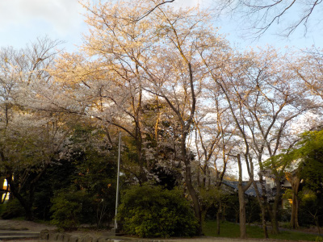
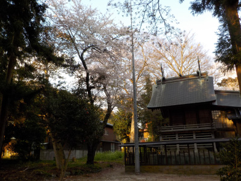

伊努神社でアナグマを見ました。
2020/04/09

近くを通ったら大きな桜の木が見えたので寄ってみました。
幹はそんなに太くないですが、木が上に向かってよく伸びていたので大きかったです。

神社にアナグマがトコトコ歩いていました。
背が低くて太っちょで可愛かったです。
カメラの望遠が非力なのと、夕方で暗かったので撮影できませんでした。
島根県出雲市西林木町376
2020/04/09

近くを通ったら大きな桜の木が見えたので寄ってみました。
幹はそんなに太くないですが、木が上に向かってよく伸びていたので大きかったです。

神社にアナグマがトコトコ歩いていました。
背が低くて太っちょで可愛かったです。
カメラの望遠が非力なのと、夕方で暗かったので撮影できませんでした。
近くの史跡
【鳶ガ巣城址】
近くの桜の名所
【鳶巣土手（新川桜土手）】
近くの温泉
【しっとりつるつる北山温泉】